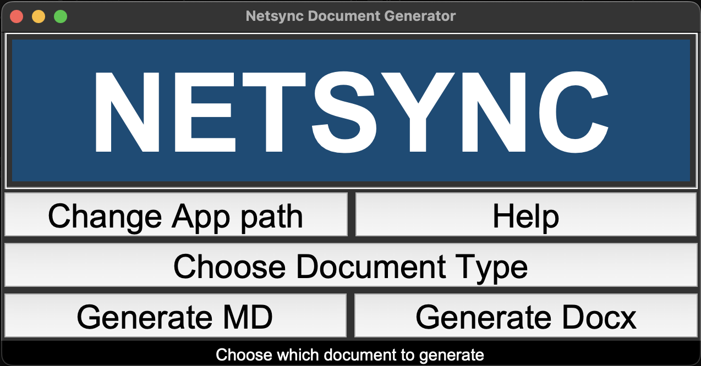
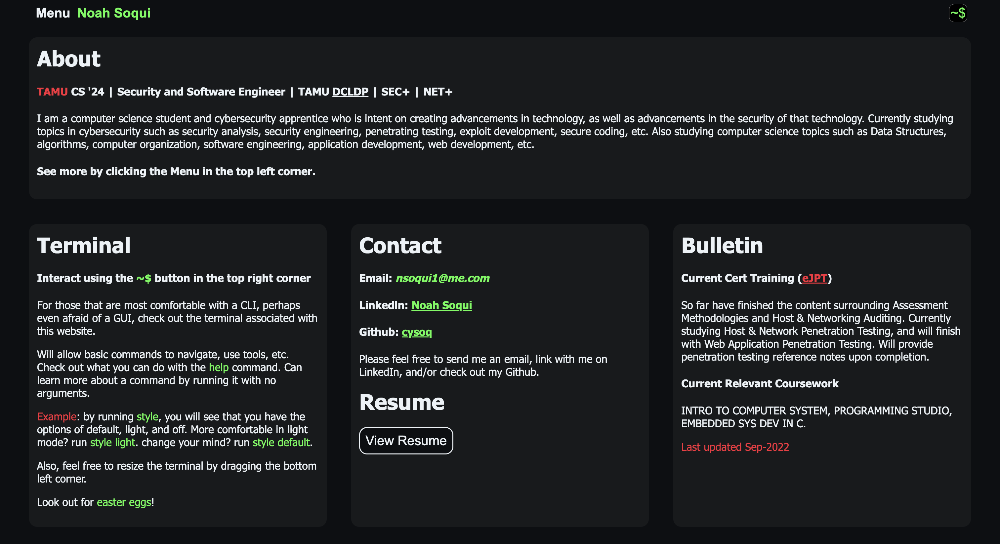

DocxGen
A markdown and docx generator for offensive security
A large part of Penetration testing, and Vulnerability Assessment is creating reports. After all, it it the only outcome that has business use in risk management. However, it takes a lot of time and money to turn the raw data into something customer readable, and there is the risk of human error when churning out so many reports. This app will create markdown documents that can be edited in vim (or editor of choice) easily , in a formatted way. After filling out the document, it will be able to easily generate a dynamic, customer readable docx document using a template, and json file that can be updated without recompiling. This app reduced time, as well as prevented errors in creating Penetration testing, and Vulnerability Assessment. It was also later applied to Statement of Work Documents. Supports Windows and Mac OS.
This app was created for Netsync Network Solutions, and thus no source code is available as I do not own it.
Personal Website
A website to display my information and connect with others
This website was originally apart of my CSCE 315 Programming Studio class. It was written in HTML, JS, and CSS. Works as most portfolio websites would, using multiple pages and a consistent navbar. It also includes a terminal emulator to run commands and other fun additions.
See the code: Personal Website
Quizlet's for Security+ and Network+
A very large amount of material following CompTIA curriculum
Can use it to supplement study, to verify learning, or to use the testing feature for preparation
Join the Security+ class here
Join the Network+ class here
Any issues in joining the class, or any questions about how to use them, please feel free to reach out
More Projects
Check out my Github for more!
Will see that that I am currently work on Cybersecurity Penetration Testing Notes that will be soon be deployed as a cybersecurity resource site